13.3. Other Cross-sectional equity stratgies¶
The universe of trading strategies is vast, specially in equities.
Here I briefly discuss a few and then provide a description of how to construct tradign signals for more than 50 equity trading strategies
13.3.1. Quality investing¶
What is “quality” investing?something you are willing to pay a high price for, all else equal!
How it relates to value investing?
No uniform definition
Profitable
Safe
Good governance
Good growth – asset growth, earnings growth, etc.
High payout
Creditworthy
Well managed
Accounting quality – accruals, earnings stability, etc.
Relation to value investing
Buying high quality assets without paying premium prices is another form of value investing
Does quality carry a premium on its own?
A Simple Quality Metric – Profitability!
Simple quality measure = gross profitability = (revenues – COGS)/assets from Novy-Marx,2013
Common recurring theme is the strong relation between quality and value
Quality can even be viewed as an alternative implementation of value
Buying high quality assets without paying premium prices is just as much value investing as buying average quality assets at a discount
Warren Buffett, “far better to buy a wonderful business at a fair price than to buy a fair business at a wonderful price.”
Quality and value strategies are dissimilar, however, in the stocks that they actually hold
High quality firms tend to be expensive, while value firms tend to be low quality
Quality strategies are thus short value, while value strategies are short quality.
Each of these strategies consequently tends to do well precisely when the other under-performs
Value stocks are cheap -> high expected returns and growth stocks are expensive -> low expected returns
Similar arguments suggest that firms with productive assets should yield higher average returns than firms with unproductive assets
Profitable firms that investors demand high average returns to hold should be priced similarly to less productive firms for which investors demand lower returns
Variation in productivity identifies variation in required rates of return
This argument is consistent with both rational risk pricing and behavioral forces
Evidence: gross-profits-to-assets strongly predicts returns, especially controlling for book-to-market (scaled price)
Profitable firms have higher average returns than unprofitable firms
Despite having, on average, lower book-to-markets and higher market capitalizations
Consequently, provides an incredibly valuable hedge for value strategies
Combination explains a whole host of accounting-based and earnings-related anomalies, including ROE, market power, default risk, net stock issuance, and organizational capital
Here are the key results of the paper
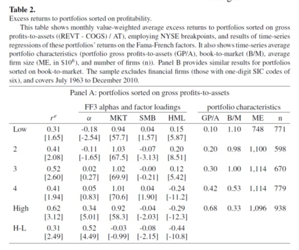
You see that the Profitable minus Unprofitable portfolio has a very sizable alpha relative to the Fama-French 3 factors model( you can see this in the last line of the table in the left)
So much so that Fama and French added this factor to their 5 factor model, but they call RmW, Robust minus Weak
You see that the alphas are much higher than the premium because of the negative exposure to the value factor
A great sucess of this strategy is that it helps price a variety of other strategies, so it is a grate factor because allow us to summarize the data better
You can see this on the table below where Robert compares the 4 factor alpha of a variety of trading strategies with the alpha after including the profitabiltiy factor
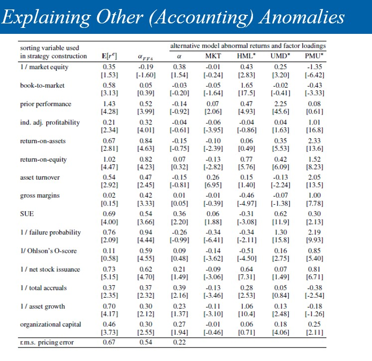
comparing cloumns 2 and 3 you see that lots of the alphas became insignificant, what means that the profitabiltiy factor together with the other 4 factors help span the mean-variance frontier that includes these assets.
13.3.2. Post-earnings Announcement Drift (PEAD) portfolios¶
These portfolios continue to display return drifts after the earnings announcement dates, and hence are referred to as post-earnings announcement drift (PEAD) portfolios.
Below is a plot of the realized returns of the portfolios organized around event time
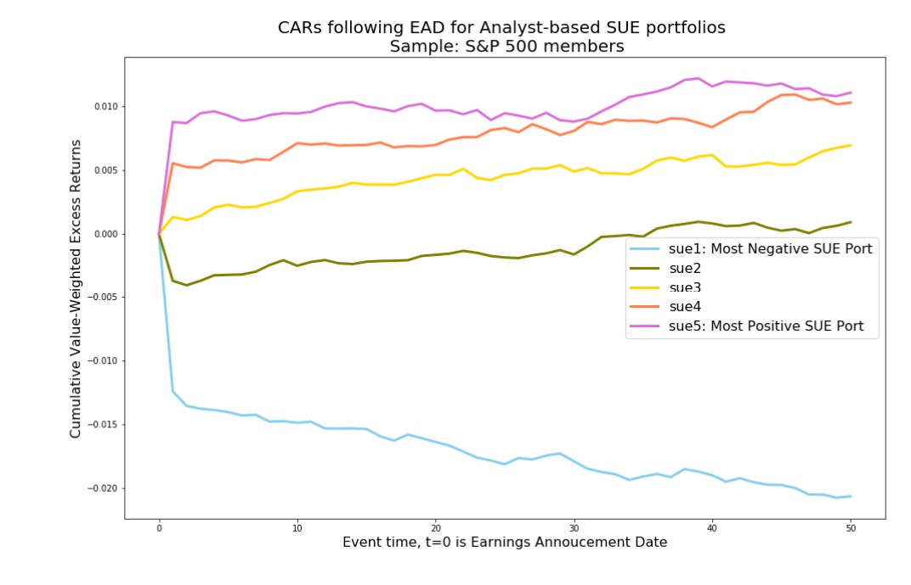
What would you expect if markets were efficient in incorporating information?
Why prices might “Trend” this way?
If you are interested in implementing this, this link provides a detailed code of how to do it
a simpler implementation that works almost as well is to sort stocks on their return after the earnings release
13.3.3. Defensive Investing¶
Instead of looking for strategies that performed well in the past, look for strategies that have low risk.
The idea is: risk is much easier to predict than returns
Relies on a weak risk return trade-off->your notion of risk is not perfectly related to the implied by the tangency portfolio (which we don’t know!)
Three important low risk anomalies
Betting-against-Beta, Pedersen and Frazzini (2011)
Low Vol , Ang, Hodrick,….(2012)
Hedging Risk factors Hersovick, Moreira and Muir (2018)
Betting against beta
The BAB idea is that beta risk is not compensated, low beta stocks turn out to have big alphas and high beta stocks have very negative alpohas
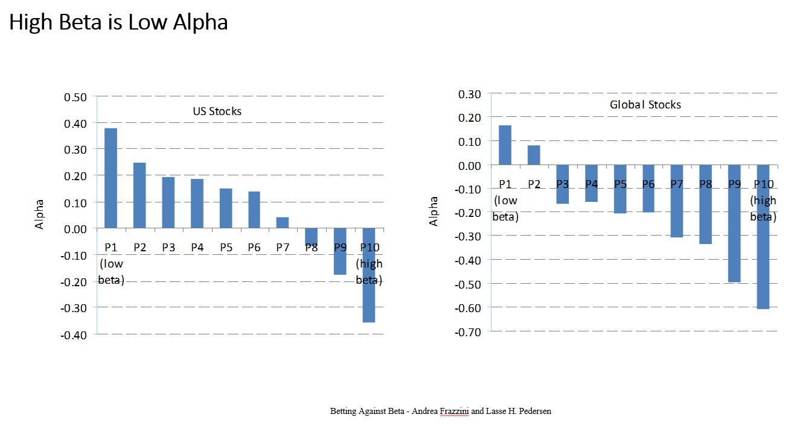
Why that might be the case?
how do you use this empirical fact to “beat” the CAPM/market?
Hedging Risk Factors
HMM create minimum variance portfolios as follows
Pick a factor model \(F_t\) where F here is possibly a vector of multiple excess return factors
For each stock i run the multivariate regresion
Now construct the covariance matrix of all the stocks by assuming \(Var(\epsilon)\) is diagonal, i.e. that the risk unexplained by the factor model is uncorrelated across assets. (this is not true, but estiamting this covariance matrix is intractable)
Stack all the \(\beta_{i,F}\) so you have a big Beta matrix that has dimensions n (number of stocks) by f (number of factors)
this is a big n by n matrix
now construc the minimum-variacne portfolio as we saw in class
HMM find very large SR
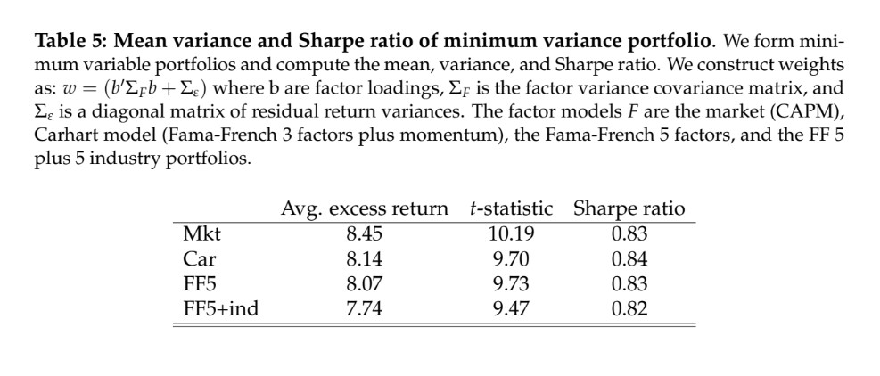
And extremley large alphas with respect to a variety of factor models
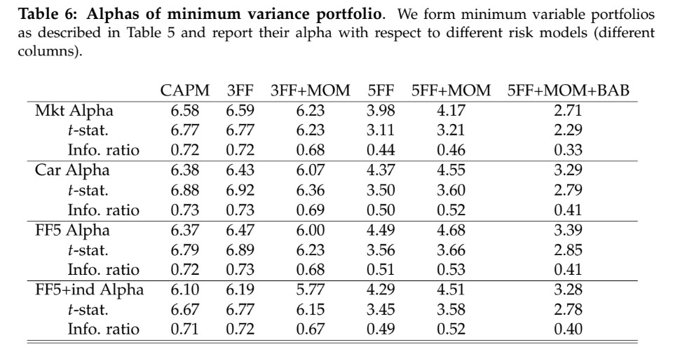
Thus it pays to bet against risk!
13.3.4. Comprehensive list of Trading signals¶
The list of trading strategies below come from Kozak (2020) “Kernel Trick for the Cross-Section”
Each describe how to consturct the strategy signal which then can be transformed in a tradign strategy by sorting methodology discussed in Chapter 14.
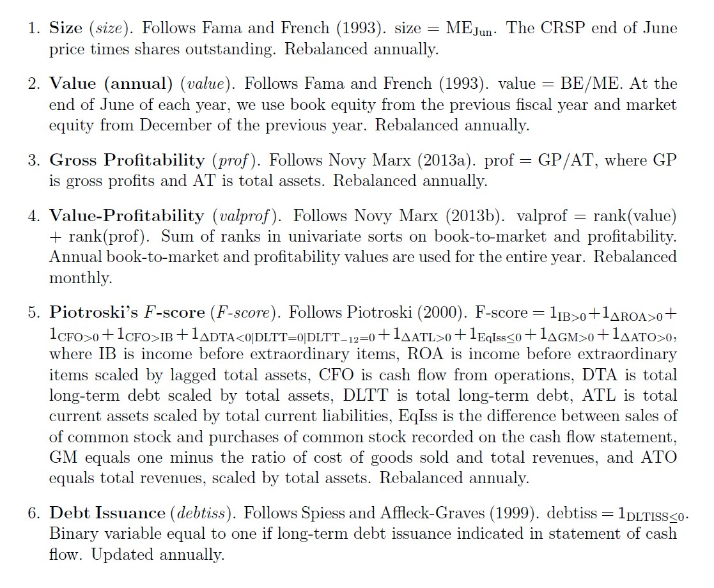 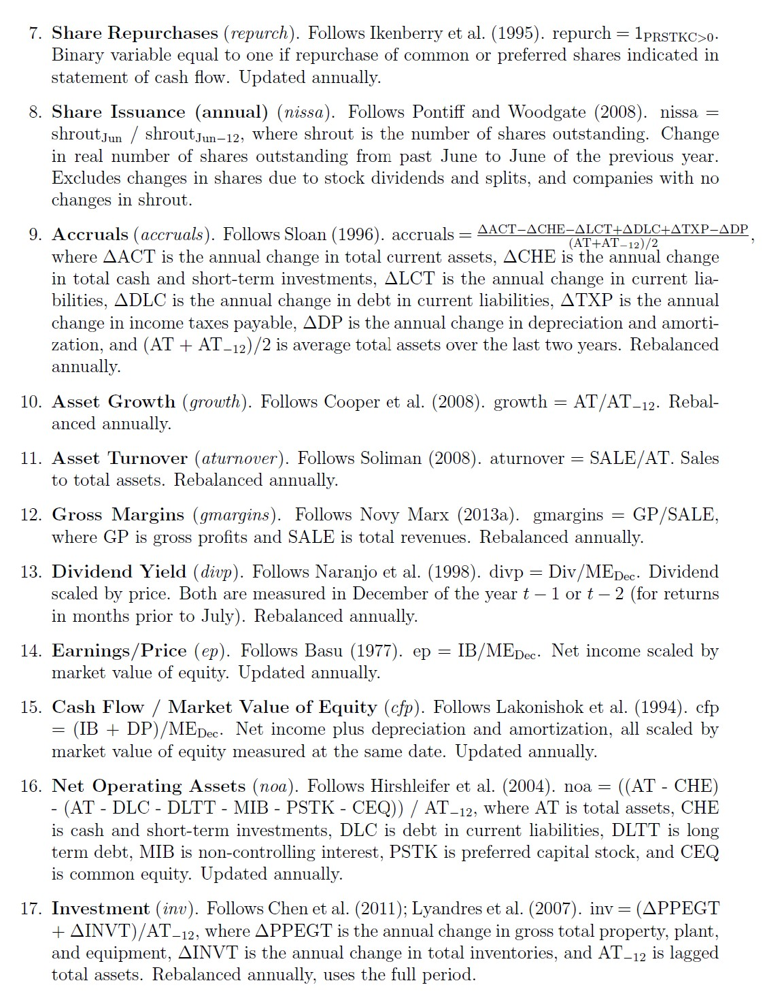 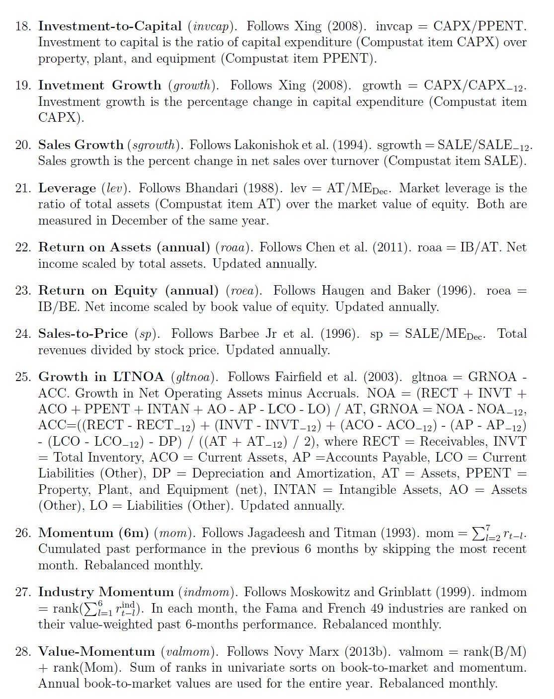 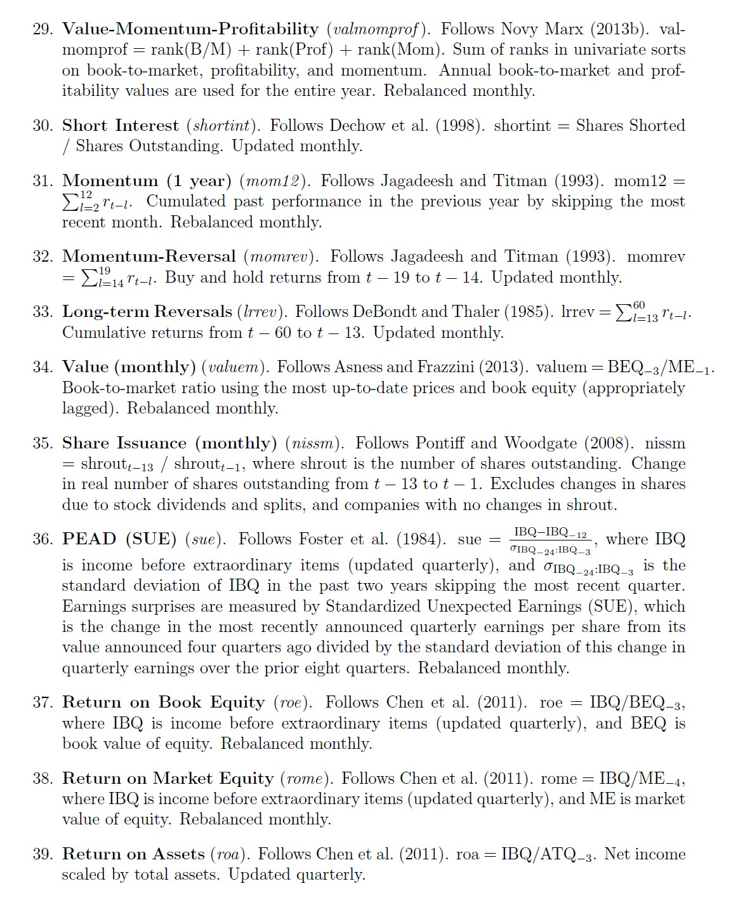 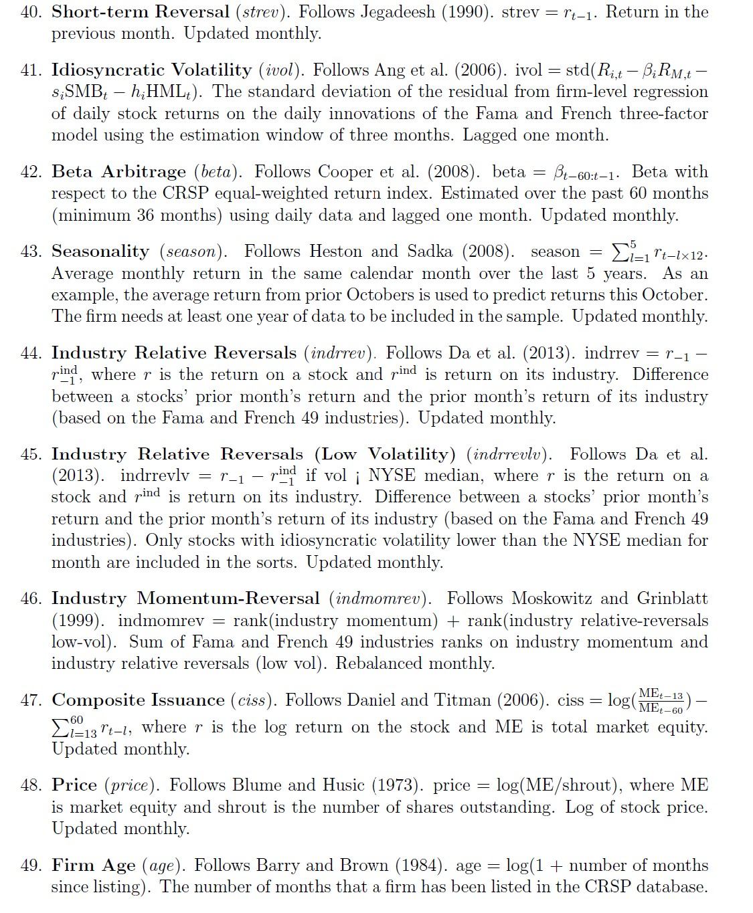 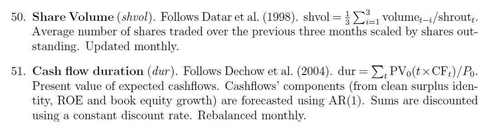
This below add additional detail on the timing of the accouting variables
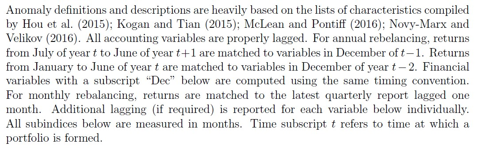